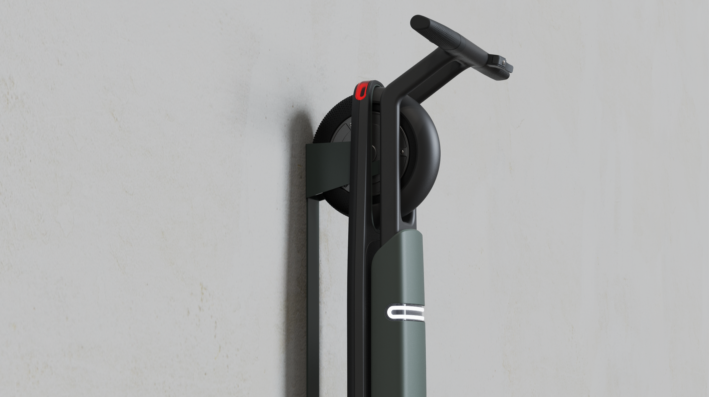
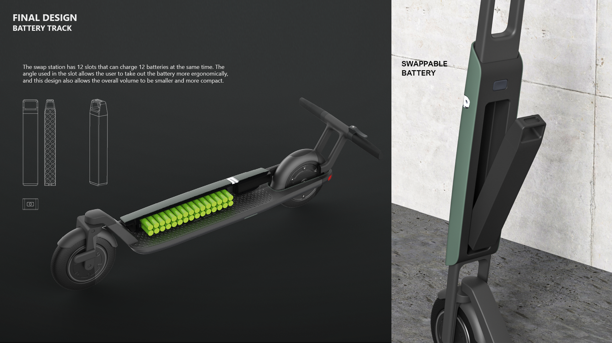
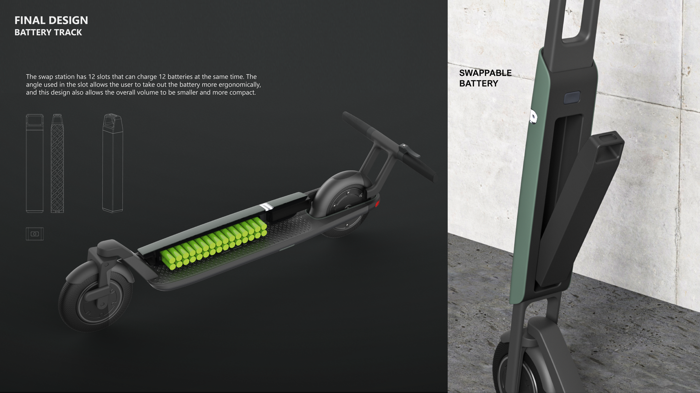

Define the urban task
Storage, indoor parking and portability frame the project around the realities of dense urban movement.
A shared micro-mobility concept that treats folding, steering and energy exchange as one connected service system.

FLEX approaches micro-mobility as a relationship between rider, vehicle, charging infrastructure and fleet maintenance. The design therefore starts with storage, portability and the lifecycle of the battery rather than treating the scooter as an isolated object.
The outcome is a platform that makes the service logic physically clear. Energy, folding and steering are organised around a structure intended to reduce footprint while retaining a stable, understandable riding experience.

Vehicle architecture
Storage, indoor parking and portability frame the project around the realities of dense urban movement.
A dual-stem approach prevents the steering mechanism from competing with the fold, while contributing to a more stable structure.
The battery track is placed in the stem cavity rather than the deck, concentrating electrical components for service and exchange.

Selected visual / Battery architectureBattery exchange made visible.Current source preview — replace later with a system map, station render or battery-track detail.FLEX brings the mechanical requirements of folding and steering together with a legible energy system. The project uses the product form to make maintenance and shared use part of the experience, rather than an invisible afterthought.